Low-Poly Model Homework
Job Interviews Circus Act
Process Timeline
Overview and Concept
My scene is a clown balancing on a ball at a circus, with a twist: behind the camera sits a disappointed job interview panel. It is built from three objects: the set of juggling balls, the clown, and the balance ball with its stage.
Why this idea
The assignment asked for three objects, but I wanted them to work together as one organized set piece. The first arrangement that came to mind was three items stacked vertically. Stacking made me think of balancing on something, and balancing led me to a clown at a carnival.
I spent a few days settling on the idea before starting. My first concept had the clown holding an umbrella up in one hand, but I cut it. Most real performer examples I watched showed balance balls, not umbrellas, so I kept the scene closer to what you would usually see.
Concept Sketches
Before modeling, I sketched each piece by hand to plan shapes, colors, and the final layout.
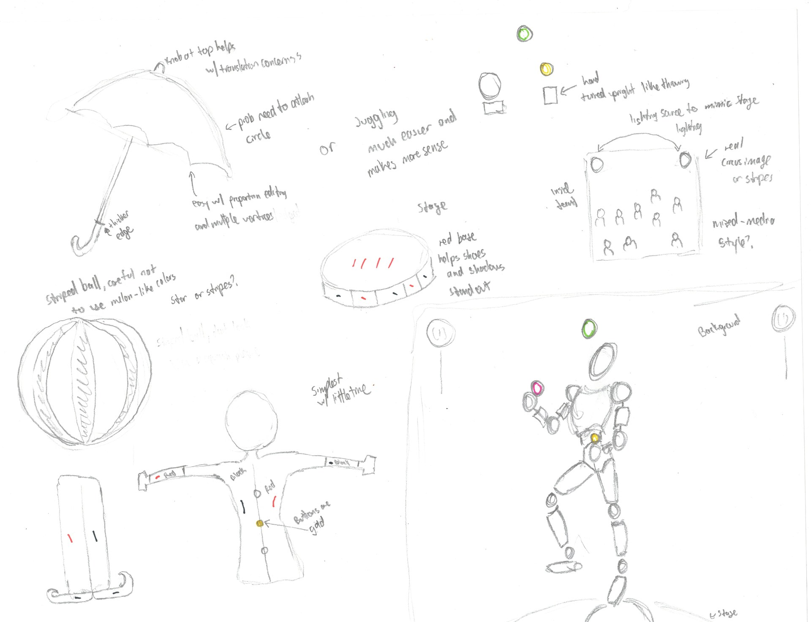
- Umbrella vs. juggling: I sketched the umbrella with notes on modeling it, then compared it to juggling. Juggling was much easier and made more sense for the scene.
- Juggling hand: The hand is turned upright, as if throwing.
- Stage: A round platform with a red base, so the shoes and shadows stand out.
- Balance ball: A striped ball, avoiding melon-like colors. I also considered a star pattern.
- Clown outfit: Red and black accents, gold buttons, and curled shoes, kept simple to fit the time I had.
- Background: Inside a circus tent, using a real circus image or stripes, with lights placed to mimic stage lighting. I noted a possible mixed-media style.
- Full scene: The clown juggles three colored balls with one knee raised, standing on the stage.
Presentation Plan
I will present three angles of the same arranged scene rather than one photo per object. The assignment allows either option. Each angle will be chosen based on the lighting, the scene setup, and the crowd background.
Object 1: The Clown
The clown is built from a low poly character tutorial, then recolored and detailed into a clown and rigged so he can be posed.
Ideation
At first I planned to use a premade character from the website shown in class. After rereading the homework, which asks us to create three objects, I switched to building the character myself. I followed the tutorial the instructor shared, Easy Low Poly Character Modeling in Blender 2.9x by Imphenzia. The tutorial's character ends up as a police officer, so my plan was to finish the base model, then change the colors and details to turn him into a clown.
Techniques Learned in Blender
- Flatten a selection: S, then Z, then 0 scales the selection to zero on the Z axis, so the faces sit on one flat plane. I used this for the feet.
- Views and select modes: Numpad 1, 2, and 3 switch to front, side, and top views. The 1, 2, and 3 keys on the main row switch between vertex, edge, and face select in Edit Mode. Using shortcuts reduced wrist and elbow strain.
- Mirror: Model one half of the character and Blender copies it to the other side.
- Backface culling: Hides the back side of faces. It helps check which way faces point and whether a part has real thickness. Game engines use the same idea to skip faces the camera can't see.
- Fill a hole: Select the border edges and press F.
- Inset (I): Creates a smaller face inside the selected one. While insetting, pressing I again toggles Individual (each face separately) and B toggles Boundary.
- Edge Slide (G, G): Pressing G twice slides the selection along the mesh instead of moving it freely.
- Delete completely: X in Object Mode removes a whole object. In Edit Mode, X > Vertices removes the selection with its edges and faces, unlike Dissolve. L selects connected pieces, and P > Selection splits a piece into its own object.
- Pausing the mirror: In the Modifiers tab, toggle the Mirror modifier's Edit Mode or viewport icon to turn it off temporarily. Applying the modifier (after saving a backup) makes both halves separate, so later edits stay on one side.
- Attaching the nose and buttons: The red nose, suit buttons, and sweat drops are spheres. To keep them on the clown instead of floating free, parent each one to a bone with Ctrl+P > Bone, or join them to the body with Ctrl+J and assign vertex groups so they follow the rig. Pose Mode confirms they move with him.
Problems and Fixes
| Problem | Cause | Fix |
|---|---|---|
| Moving one point in the UV Editor dragged others with it | Sticky Selection was on | Set Sticky Selection to Disabled |
| Black outline shapes floating above the body | They selected in Object Mode but not Edit Mode, so they were a separate object or modifier output | I never confirmed exactly what they were. I undid some recent moves, then deleted the whole object |
Rigging and Pose
I rigged the clown by following Character Rigging in Blender, Easy Setup for Beginners by Grant Abbitt. He is rigged and posed with one arm raised.
- Rigging steps: I followed the video one step at a time. His example is also a human-shaped character, so my model matched closely and was easy to follow along with.
For the pose I used references from SetPose (setpose.com). The pose, shown from three angles, stands on one leg with the other knee raised, the torso leaning back, the head tilted up, and arms out with open hands.
- How the pose relates to the clown: I studied the juggling and ball-balancing reference videos, recreated the pose I pictured for the clown in SetPose, and took screenshots. Then I used those screenshots to pose the rigged clown in Blender.
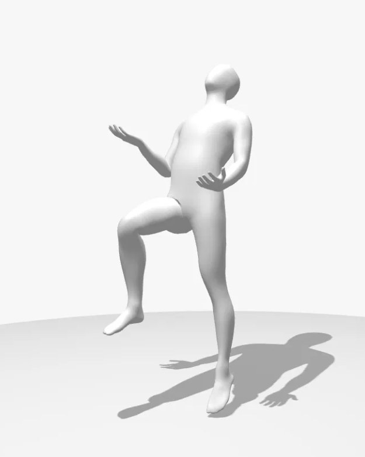
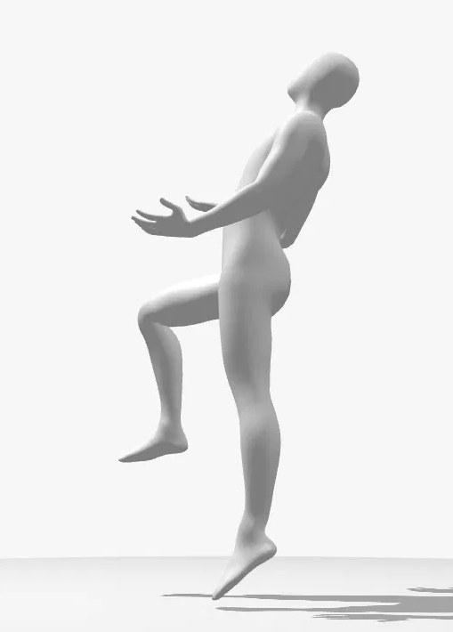
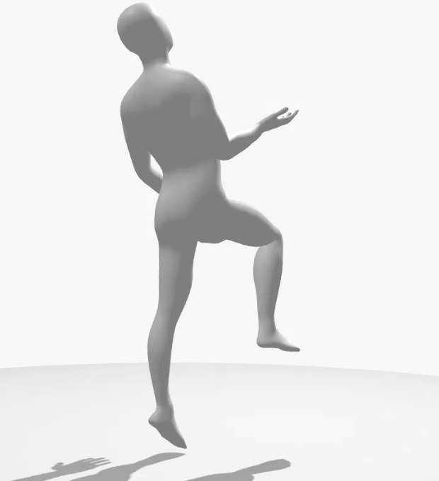
Object 2: The Juggling Balls
Each juggling ball is an Ico Sphere, colored with my palette and given its own named material.
Shininess
The balls looked washed out against the background and lighting, so I wanted them shinier and easier to see. The options in the Principled BSDF:
- Lower Roughness for a glossy surface.
- Raise Metallic toward 1 for a metal look.
- Add Coat for a clear glossy layer over the palette color.
Metallic surfaces need something to reflect, so the world background and lights also matter. If colors still look washed out, check the light Power and the Color Management settings.
- What worked: lowering Roughness to about 0.1 made the balls glossy enough to stand out.
References
- A person juggling indoors against a plain wall, with motion blur on the balls.
- A person juggling outdoors in a park, with one ball balanced on their head.
- A person standing on a blue exercise ball while juggling three balls.
Screenshots of these references appear with their videos in Sources.
Object 3: The Balance Ball and Stage
Object 3 combines the balance ball and the stage it sits on into one piece of the set.
- How I built the ball: an Ico Sphere, the same base shape I used for the juggling balls, the clown's nose, and his sweat drops.
References
- Two performers in black-and-white checkered costumes standing on large balls, one checkered and one red. The performer on the right holds a red umbrella.
- A masked performer standing on a large red ball at an indoor event with a crowd behind.
- The blue exercise ball photo from the juggling references.
Screenshots of these references appear with their videos in Sources.
The Stage
I first kept the stage in reserve as a possible fourth object, then combined it with the balance ball. It is the circle platform made earlier.
- Making the circle: Shift+A > Mesh > Circle, with Fill Type set to N-Gon for a solid disk. A low vertex count keeps the low poly look.
- Problem: The circle did not follow the character when I moved him away from the world center.
- Likely cause: The circle was a separate, unparented object, or the move happened in Edit Mode, or the mesh and armature were moved separately.
- Fix: Parent it with Ctrl+P > Object and move things in Object Mode. Outcome: parenting fixed it, and the circle now moves with the character.
Scene Setup
The scene uses two photo backdrops, palette-based colors on every object, and three-point stage lighting.
Background Photo
Two photo planes frame the scene: a circus crowd behind the clown, and a panel of disappointed job interviewers behind the camera.
- What worked: In the 3D viewport, Add > Image > Mesh Plane, then choose the photo. This creates a plane with the picture already applied. It shows in Material Preview mode, not Solid mode.
- Problem: I couldn't find the Texture option in the Add menu.
- Cause: I was in the 3D viewport's Add menu, which only lists objects. The Texture option lives in the Shader Editor's Add menu.
- Other fix: In the Shader Editor, Shift+A > Texture > Image Texture, then connect its Color output to the Principled BSDF Base Color.
Coloring with the Palette
In the Shading workspace, I add my palette image as an Image Texture node on each object and connect its Color output to the Principled BSDF Base Color. I do this one at a time for each ball, each platform, and each plane the platforms sit on, then adjust the colors until they look right. This builds on the earlier UV Editor work of placing faces over the palette squares.
Naming Materials
My materials still had default names (Material.001, Material.002, and so on). I am renaming each one in the Material Properties tab to say what it is, starting with the juggling balls, so they are easy to tell apart.
Transparent Plane
To make a plane transparent, lower Alpha in the Principled BSDF and set the material's blend or render method. To let light pass through, turn off the plane's shadow under Object Properties > Visibility. Transmission gives a frosted-glass look instead.
Spot Lighting
I learned spot lighting from How to use Blender's Light Objects by Ryan King Art.
- Setup: Three spotlights, one on the left, one on the right, and one centered above. All three point down at the clown, triangulated like a typical stage.
- Color: A warm yellow.
- Power: 5,000 W for each light.
Final Product
The final scene puts a circus clown in front of a job interview. I started with a clown in the middle of a circus and a crowd photo behind him. Then I thought it would be ironic if the setting also looked like a job interview. So the background behind the clown is the circus, but behind the camera is a photo of interview panelists who look disappointed.
The three render angles build up to the reveal:
Angle 1: The full set. A wide front view of the clown balancing on the striped ball, centered on the round stage with its red-and-black striped edge. The warm spotlights pool on the stage, with the circus crowd and star-trimmed ring wall behind.
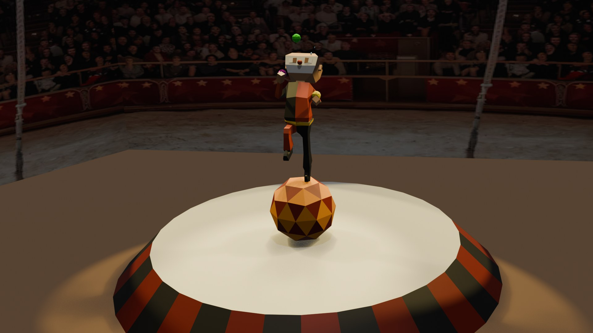
Angle 2: Close up on the act. A tall side view of the clown juggling the green, purple, and yellow balls with one knee raised. It shows the details: his red nose, the sweat drop above his head, and the faceted low poly ball.
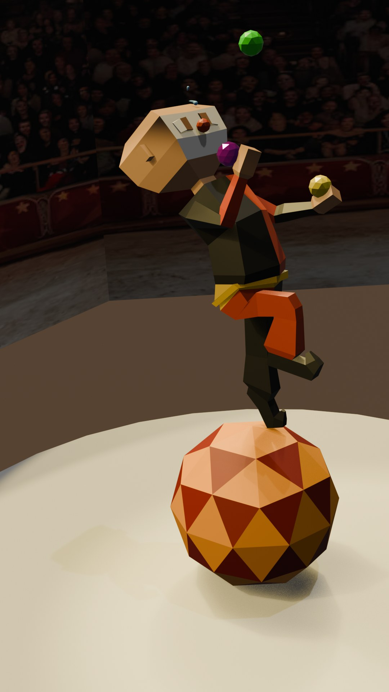
Angle 3: The reveal. The camera sits behind the clown, looking out at the panel of disappointed interviewers around a conference table. This is the joke: the circus act is really a job interview. The idea came to me while brainstorming. Watching the clown struggle to keep his balance felt like how I feel on the job market right now.
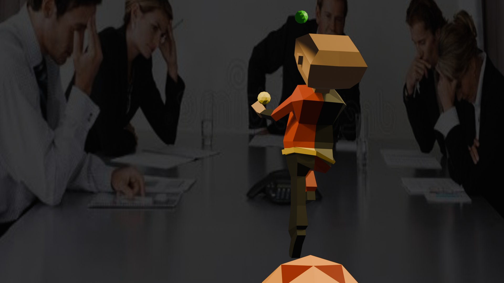
Sources
- Easy Low Poly Character Modeling in Blender 2.9x, Imphenzia (shared by the instructor)
- Character Rigging in Blender, Easy Setup for Beginners, Grant Abbitt
- How to use Blender's Light Objects, Ryan King Art
- SetPose, pose references
Reference Videos
Juggling and ball-balancing videos I used to plan the clown's pose.
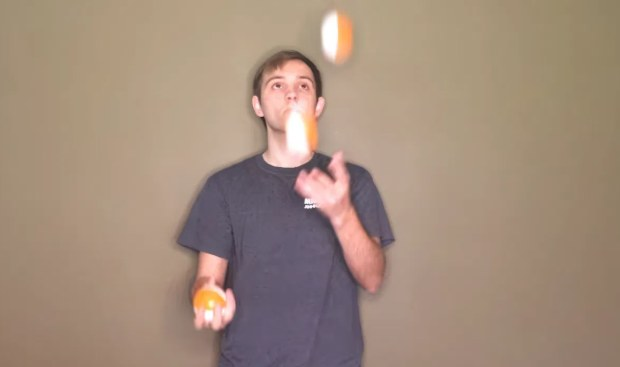
01
How to Juggle 3 Balls in Two Minutes, Juggleboy
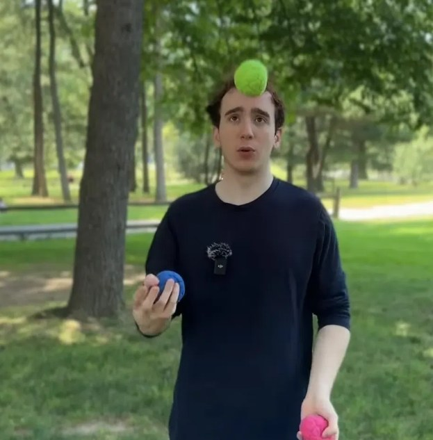
02
How to Juggle 3 Balls, Flyjuggler
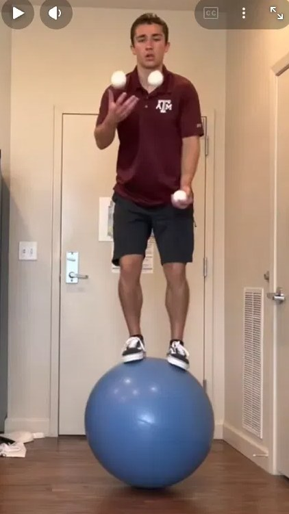
03
Juggling 423 on a Walking Globe, Theunicycleguytamu
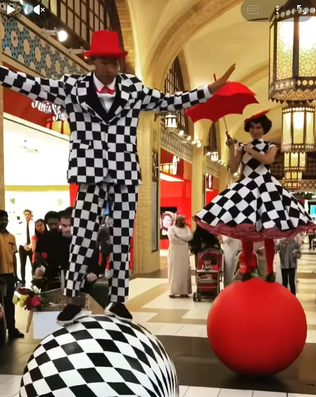
04
Giant Circus Ball Balance Act, valeartis
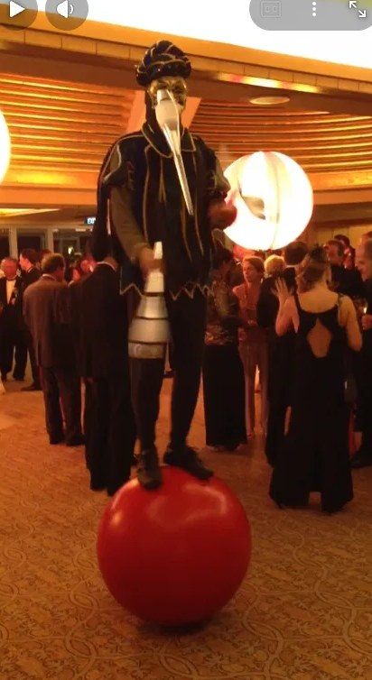
05
Globe Walking Juggler, circusinmotion
AI disclosure: I used Claude, an AI assistant, to keep running notes while I worked, answer Blender troubleshooting questions, and organize and format this documentation; the idea, sketches, models, and renders are my own.